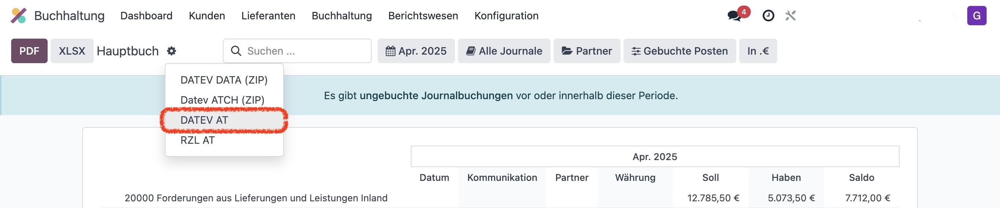

🔧 Installation
The Datev AT app (datev_at) enables DATEV-compliant export of Austrian bookkeeping from Odoo.
Place the files in the add-on path and install the app via the Odoo backend.

🧠Usage
Go to Accounting → Reporting → General Ledger to start the export.

Select the period and journals (e.g. AR, ER, BK, ...) and start the export via the gear dropdown menu.
⚙️ Additional Configuration
👤 Partner Accounts
In the customer or vendor form, under Accounting, you can set a default receivable or payable account.

🔢 Account Number Length
You can configure the number of digits for chart of accounts, customer, and vendor accounts in the Settings.
🧪 Filter Options
With Developer Mode activated, you can add or hide extended filters to tailor the export.